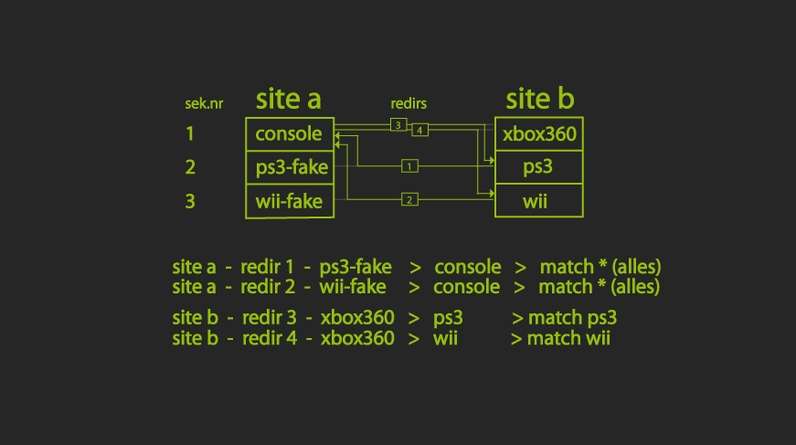

|
REDIRECTS
Redirect, also Umleitung, wird die Möglichkeit genannt von einer Sektion in eine andere umzulenken.
Auf einer Site gibt es z.B. für HD Filme eine Sektion Movie-HD, auf der Anderen gibt es dafür 2 Sektionen, Movie-1080p und Movie-720p.
Da d-tool normalerweise nur von z.B. Sektion Nr.34 auf Site 1 zu Sektion Nr.34 auf Site 2 sendet, hätte man ein Problem.
Auf Site 1 ist z.B. Sektion Nr.34 Movie-HD - die passende Sektion Nr.34 auf Site 2 ist Movie-1080p.
Auf Site 2 gibt es zusätzlich die Sektion Nr.35 Movie-720p, wofür es auf Site 1 keine Sektion gibt, diese legt man noch an.
Man hat nun folgende 2 Dinge zu regeln:
1. 720p Releases von Site 1 Movie-HD (Nr.34) sollen von Movie-1080p in Sektion Movie-720p (Nr.35) gelenkt werden
Dafür geht man im Sektionsmenü der Site 2 auf Redirections und trägt ein: Movie-1080p + Movie-720p + 720p
Bedeutet: Ändere die Sektion von Movie-1080p zu Movie-720p, wenn 720p im Release vorkommt
2. 720p Releases von Site 2 Movie-720p (Nr.35) sollen in Sektion Movie-HD (Nr.34) von Site 1 gelenkt werden
Auf Site 1 eine Dummie-Sektion Nr.35 anlegen, Name egal. Ich schreibe immer "fake" mit rein, damit klar ist es ist ein Dummie. In diesem Fall also "Movie-720p-Fake". Die Sektion wird nicht aktiviert und Pfadangabe ist egal.
Dann geht man im Sektionsmenü der Site 1 auf Redirections und trägt ein: Movie-720p-Fake + Movie-HD + *
Bedeutet: Ändere die Sektion von Movie-720p-Fake zu Movie-HD, egal was ankommt (*)
Fertig
Mögliche Einträge als Match einer Redirection:
Einfache Einträge, Wildcards (*abc*fgh*), Mehrfacheinträge (entry|entry...), Regex Eintrag mit einem ~ davor und der Eintrag SPORT sind möglich.
Man kann statt einem Match das im Release vorkommt auch SPORT als
Match eintragen. Dann wird alles umgeleitet, was die Matches im Release
hat, die bei /dteditsport eingetragen wurden.
Und man kann, falls sich 2 Redirections zanken würden, eines der
beiden Einträge forcen mit einem ! vor dem Match, zb. TV-EN+TV-x264+!1080p.
Wenn es nun noch eine Redirection mit TV-EN+TV-HDTV+HDTV gibt, wird immer die mit ! ausgeführt.
Bei einem Release wie Rls.rls.1080p.HDTV.x264-RLS wäre nicht klar
was nun vorrangig ist, HDTV oder 1080p. Hier ist es 1080p und das Release
wird nicht zu TV-HDTV, sondern zu TV-x264 geschoben. Das Funktioniert natürlich nicht bei Mehrfacheinträgen mit entry|entry.
Leider funktionieren Redirects mit cbftp nur per Transferjob und nicht per Spreadjob, was ineffektiver ist. Dass es ein Transferjob ist sieht man auch an den zwei ** am Ende des Eintrags mit Redirection im at-Fenster. Ein Stern bedeutet race mit cbftp als Spreadjob, zwei Sterne bedeuten race mit cbftp als Transferjob.
Redirects werden immer 2 mal ausgeführt, das bedeutet es kann sein, dass ein Release 2 mal umgeleitet wird.
Zum Beispiel ein Sport Release, das zuerst von Sport in eine TV-720p Sektion und dann in eine 1080p geleitet wird.
Allgemein zu Fake-Sektionen:
Man braucht die Sektion
nicht aktivieren um sie für Redirects zu nutzen, daher dann immer
deaktiviert lassen. Den Pfad zu Fake-Sektionen muss man auch nicht angeben, hat sowieso keine Auswirkung. Man muss einfach nur den Namen angeben damit man ihn als Redirection wählen kann, mehr nicht.
Zum besseren Verständnis hier ein Schaubild, das die Handhabung nochmal an einem
anderen Beispiel zeigt, diesmal gibt es Site a mit nur console für
alles, auf site b gibts xbox, wii und ps3 getrennt. Für die beiden Sektionen, die es auf der Site a nicht gibt, vergibt man
wieder Fake Sektionen. Diese gezeigte Möglichkeit ist eine, ich nutze
eine der 3 Sektionen einer Site immer für die Gesamte der anderen. Ansonsten müsste man eine extra Sektion für Console machen, das erspare
ich mir und nutze eine der vorhandenen für Console.
Dabei achte ich zB. bei dem klassischen Fall, wenn es auf einer Site nur HD gibt und auf der anderen HD-720p und HD-1080p, dass ich die HD Sektion mit der HD-1080p Sektion kopple und für HD-720p eine extra Sektion mache mit Redirection. Weil tendenziell dort mehr kommt bzw. mit mehr Datenaufkommen und 1080p dann nicht umgeleitet werden muss und das race als spreadjob zu cbftp gesendet wird statt als transferjob.
Die durchgezogenen Linien zwischen den Kästen zeigen die Richtung mit Pfeil und die Umleitung mit Nummer entsprechend zur Auflistung darunter, die kaum sichtbare Linie die ursprüngliche Richtung ohne Redirection.

|
|